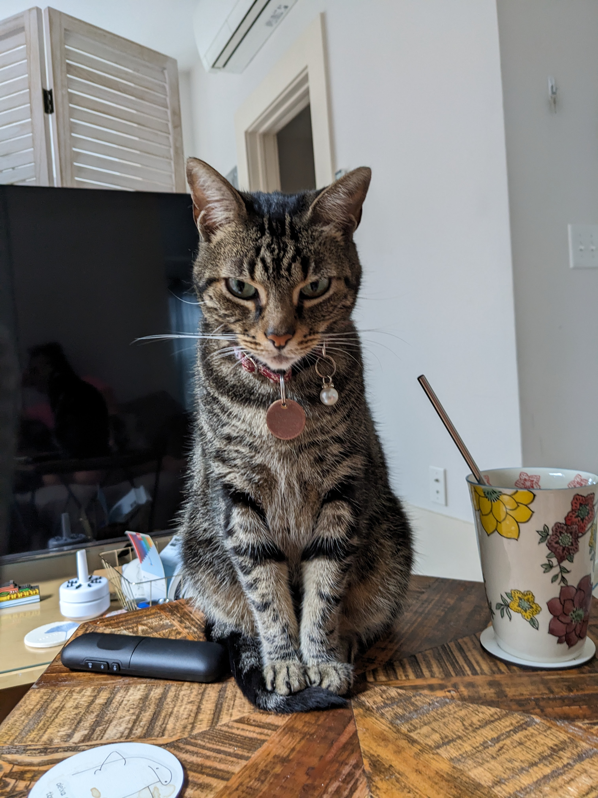
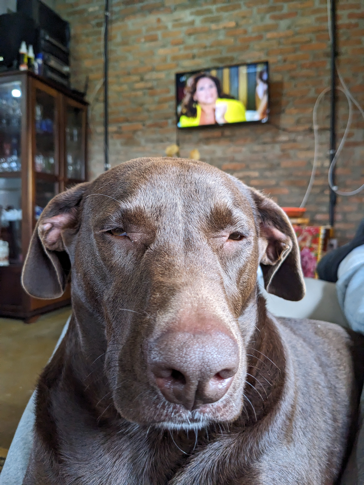

mkdir <your-username>.github.io
cd <your-username>.github.ioTerminal basics
pwdlists current directory;lslists directory content. For example, runls my-dirto know what is inside the directory calledmy-dir.cdstands for change directory. To navigate to a directory, use:cd <path-to-directory>;mvMoves or renames files. Usage:mv <old-name/location> <new-name/location>;
Pre-requisites
We assume you have:
Step 1: create a repo
In this workshop, we assume you are creating a personal web page. GitHub allows you to host a personal website for free under the domain <username>.github.io. We first need to create a GitHub repository named like that. For example, in this talk, we will create a website for a user called statcomp-org (see Figure 1).

Step 2: Using our quarto template
Open a terminal window and navigate to a directory where you want to keep your website. On my laptop, I have a directory (or folder) called git-projects where I store all the git repos I work with. The following code chunk creates a directory to store the files we will use to create your website locally and navigates to it.
Now, we obtain a template running the following command:
quarto use template swosc/quarto-templateYou will be asked the following questions. Type “Y” and the key “enter” and “.” and the key “enter”, respectively.
Quarto templates may execute code when documents are rendered. If you do not
trust the authors of the template, we recommend that you do not install or
use the template.
? Do you trust the authors of this template (Y/n) › Y
? Directory name: › .
Important
When running the command below, we are assuming your current “working directory” in the terminal is the directory where you are going to keep your website. Run pwd, to make sure you are working on the right directory.
Let us use ls to track the files that were generated in our directory:
ls
LICENSE.md blog.qmd highlight-author.R profile.jpg
Makefile custom.scss index.qmd pubs.bib
_quarto.yml github lua-refs.lua styles.css
apa-cv.csl gitignore posts
Tip
Always avoid creating filenames with special charaters or spaces.
The structure of the folder is as follows:
.
├── LICENSE.md
├── Makefile
├── _quarto.yml
├── apa-cv.csl
├── blog.qmd
├── custom.scss
├── github
│ └── workflows
│ └── publish.yml
├── gitignore
├── highlight-author.R
├── index.qmd
├── lua-refs.lua
├── posts
│ ├── _metadata.yml
│ ├── post-with-code
│ │ ├── image.jpg
│ │ └── index.qmd
│ └── welcome
│ ├── index.qmd
│ └── thumbnail.jpg
├── profile.jpg
├── pubs.bib
└── styles.css
6 directories, 19 filesSee below a description on what each of those files are:
LICENSE.mdcontains the license for your website repo. Currently, the license in the template is a CC-BY license. That is, anyone is free to share and adapt, must give appropriate credit. You can use theusethispackage to change this license. See this link for thurther info.Makefilewill only be used if you wish to include a page in the website with your publications._quarto.ymlis perhaps the most important file we will keep. It will give instructions on how to design the website (more on this later).apa-cv.cslis a helper that controls the templates of the publications list that may be generated using the Makefile.blog.mdis the file that will control how your “blog” page looks like.custom.scsshelps to further customize the website.githubis a folder that we need to rename to.github. It will help GitHub to publish your website online.gitignorerename to.gitignore. This file will store the name of the files you do not want to push to GitHub.highlight-author.Ris a helperRscript intended to help with the creation of a opublications’ list (optional).index.qmdis the landing page of your website.lua-refs.luais aluascript that will be used to generate your publications list (optional).posts/is a folder containing your posts and some metadata (optional, only if you want to blog as well)- The
_metadata.ymlcontains some information on how to deal with your posts. In particular, it will tell GitHub avoid compiling them (we will compile the posts locally) - Each subfolder represents a blog post. Within the blogpost folder, we need a
index.qmdfile (more on this later).
- The
profile.jpgreplace this with your profile picture.pubs.bibs(optional) input your publications inBibTeXhere.styles.cssallows for further customization of the website.
Step 3: setting up git repo
The next step is to setup the git repo. Before doing so, let’s rename the .github and .gitignore files. This is achieved by running:
mv github .github
mv gitignore .gitignoreNow, let’s set the git repo and push the gitignore file to the remote repo.
git init
git add .gitignore
git commit -m "commiting gitignore"
git branch -M main
git remote add origin git@github.com:<your-username>/<your-username>.github.io
git push -u origin mainIf you want to get a grasp of how the website is looking like, run:
quarto preview
Note
You can use quarto preview to visualize the changes anytime you modify something on your quarto website.
Step 4: Let’s taylor our website!
Note
You may use your preferred IDE to edit .qmd files. Popular choices are Rstudio, VScode, and (not so popular) emacs. For the last two, we advise you to install the appropriate extensions to enjoy all the capabilities of quarto.
First, we will customize the index.qmd file.
At the beginning, the index.qmd file will look like this:
---
image: profile.jpg
about:
template: jolla
links:
- icon: twitter
text: Twitter
href: https://twitter.com
- icon: linkedin
text: LinkedIn
href: https://linkedin.com
- icon: github
text: Github
href: https://github.com
---
<Write somethign about yourself or your website>In general, we want to replace the href field under Twiter, Linkedin, and GitHub with the link to our own accounts. The profile.jpg file can also be changed (or we can just overwrite it).
There are 5 possible inputs for the template field. They are:
jolla(used in the provided template)trestlessolanamarqueebroadside
Play around with the different options to figure out which one suits you best.
We can include more pages and resources to our website by adding new .qmd (or even .pdf) files to it and editing the _quarto.yml file.
For example, assume we want to include our CV as a .pdf file. First, we copy our .pdf file into the directory where our website project is located, let’s say we named it cv.pdf. Next, we add the following to our _quarto.yml file.
---
project:
type: website
output-dir: docs
render:
- "*.qmd"
website:
title: "How do you wanna call your website?"
search: true
cookie-consent: false
twitter-card: true
open-graph: true
site-url: https://<yourwebsite>.github.io
navbar:
right:
- blog.qmd
- text: "How do I wanna call my CV"
href: cv.pdf
- icon: github
href: https://github.com/
- icon: twitter
href: https://twitter.com
page-footer:
left: "You can write somethig here too."
format:
html:
theme: cosmo
css: styles.css
---Adding a new .qmd file is even simpler. We do not need the text and href parameters. First, create a .qmd file. Let us call it my-new-qmd.qmd. The “body” of the file can be anything you want, but the header should have (at least) a title. The title will tell how this file will appear in the navbar.
---
title: "My new `.qmd` file"
---To add my-new-qmd.qmd to the navbar, edit the _quarto.yml as follows:
---
project:
type: website
output-dir: docs
render:
- "*.qmd"
website:
title: "How do you wanna call your website?"
search: true
cookie-consent: false
twitter-card: true
open-graph: true
site-url: https://<yourwebsite>.github.io
navbar:
right:
- blog.qmd
- text: "How do I wanna call my CV"
href: cv.pdf
- my-new-qmd.qmd
- icon: github
href: https://github.com/
- icon: twitter
href: https://twitter.com
page-footer:
left: "You can write somethig here too."
format:
html:
theme: cosmo
css: styles.css
---We can further customize the navbar. For example, we can move the twitter and github icons to the right and everything else to the left.
---
project:
type: website
output-dir: docs
render:
- "*.qmd"
website:
title: "How do you wanna call your website?"
search: true
cookie-consent: false
twitter-card: true
open-graph: true
site-url: https://<yourwebsite>.github.io
navbar:
left:
- blog.qmd
- text: "How do I wanna call my CV"
href: cv.pdf
- my-new-qmd.qmd
right:
- icon: github
href: https://github.com/
- icon: twitter
href: https://twitter.com
page-footer:
left: "You can write somethig here too."
format:
html:
theme: cosmo
css: styles.css
---We can easily change the way our website look by changing the theme parameter under format and html. To get a list of the 25 themes available, take a look at this link.
Alternatively, we can change the colors of a theme using a scss (or css file). For instance, let’s add the university colors to the cosmo theme. First, create a file called custom.scss in the root directory of our website. Next, add the following lines to the file
#| eval: false
/*-- scss:defaults --*/
$primary: #000E2F !default;
$secondary: #E4002B !default;
Important
It is important to include the /*-- scss:defaults --*/ to the custom.scss file. Otherwise, the changes will not be applied.
Finally, we rewrite our _quarto.yml file as follows:
---
project:
type: website
output-dir: docs
render:
- "*.qmd"
website:
title: "How do you wanna call your website?"
search: true
cookie-consent: false
twitter-card: true
open-graph: true
site-url: https://<yourwebsite>.github.io
navbar:
left:
- blog.qmd
- text: "How do I wanna call my CV"
href: cv.pdf
- my-new-qmd.qmd
right:
- icon: github
href: https://github.com/
- icon: twitter
href: https://twitter.com
page-footer:
left: "You can write somethig here too."
format:
html:
theme:
- cosmo
- custom.scss
css: styles.css
---We can also import google fonts into our website. To test it, let’s change the font to Ubuntu. First, we use the Google Font API to import the desired font (for further details see this).
#| eval: false
/*-- scss:defaults --*/
// colors
$primary: #000E2F !default;
$secondary: #E4002B !default;
// fonts
@import url('https://fonts.googleapis.com/css2?family=Ubuntu&display=swap');Next, we update, once again, the _quarto.yml file.
---
project:
type: website
output-dir: docs
render:
- "*.qmd"
website:
title: "How do you wanna call your website?"
search: true
cookie-consent: false
twitter-card: true
open-graph: true
site-url: https://<yourwebsite>.github.io
navbar:
left:
- blog.qmd
- text: "How do I wanna call my CV"
href: cv.pdf
- my-new-qmd.qmd
right:
- icon: github
href: https://github.com/
- icon: twitter
href: https://twitter.com
page-footer:
left: "You can write somethig here too."
format:
html:
theme:
- cosmo
- custom.scss
mainfont: Ubuntu
css: styles.css
---
Tip
The possibilities of customization are endless! My advice is to keep it simple.
Bonus
If you have your publications in a .bib file, we can use some lua and R to get a tab with your publications working. If you have no idea about what BibTeX is, take a look at this link.
Kalu (Figure 2 (a)) has her publications information in a file called pubs.bib. She has published one paper as a first author and another one as a co-author, collaborating with Cacau (Figure 2 (b)).


See below how her pubs.bib file looks like
@article{hernandes2023meowmazing,
title = {Meowmazing paper I wrote},
author = {Kalu Hernandez},
journal = {Meow journal},
number = 000,
pages = {0--0},
year = 2023,
publisher = {Crazy cats dot com}
}
@article{godoy2022growlmazing,
title = {Growlmazing paper we wrote},
author = {Cacau Godoy, Kalu Hernandez},
journal = {Meow journal},
number = 000,
pages = {0--0},
year = 2023,
publisher = {Dogs and cats getting along}
}To transform this pubs.bib into a .qmd file, we will use make (for more details see this). There are some helper files in our directory, they are Makefile, apa-cv.csv (citation style file), highlight-author.R, and lua-refs.lua. The Makefile looks as follows:
all: publications
@quarto render
publications: pubs.bib apa-cv.csl lua-refs.lua
@quarto pandoc -L lua-refs.lua \
pubs.bib --csl=apa-cv.csl \
-V --toc=false \
--to=markdown-citations \
-o publications.qmd
@Rscript highlight-author.R \
"Hernandez, K." "publications.qmd"
clean:
rm -rf publications* *~It uses the lua-refs.lua script to create a publications.qmd file based on pubs.bib. Next, it uses R to highlight a selected author.
Important
To make it work with your .bib file, you need to populate pubs.bib with your publications or include another .bib file in the directory. If that’s the case, replace pubs.bib by <your-file>.bib in the Makefile. Make sure you also changes Hernandez, K. in the Makefile to the way your name appears in the references.
Now, we run:
#| eval: false
make publicationsand it will generate a publications.qmd file. Now we only need to tell our _quarto.yml how to “find” this new file.
Step 4: Publishing
Publishing the website will be one of the easiest parts. We will use GitHub Actions (GA) and GitHub pages.
Basically, all you have to do is to go to your repository on GitHub, click on Settings > Pages. Next, under Build and Deployment, set Deploy from a branch, and, under Branch, select main and /docs.

Next, you should create a new branch called gh-pages. To do so, click on main, and then on View all branches. Next, create new branch. Name the new branch as gh-pages.
Now, every time you push your changes to github, the website will be deployed (published) at <your-username>.github.io.
Closing comments
Creating a website is a fun task that may take a lot of your time if you are too attached to details, be mindful. The best way to move forward, is being good at Googling and paying attention to the error messages (do never dismiss them!).
There are many resources online teaching you how to customize your documents, write reports, and so on in Quarto. If you want to do something different, is very likely that someone has already done that. So, once again, always search the web thoroughly to avoid “reinventing the wheel”.
Further resources (explore)
Quarto website provides a bunch of resources;
Customizing Quarto Websites talk, by Sam Csik;